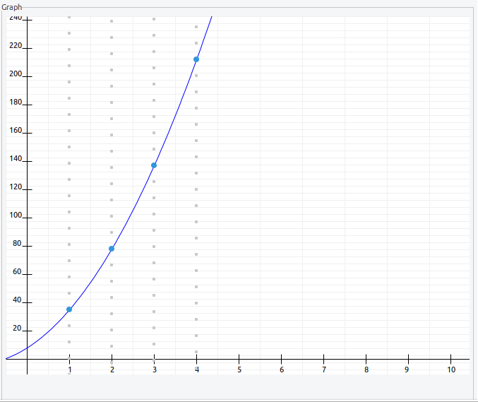
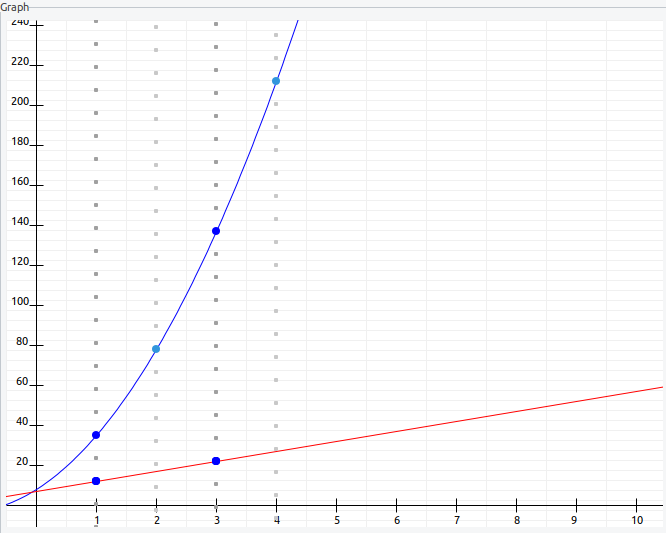

The demonstration shows how Shamir's Secret Sharing works. The idea is to generate a random polynomial which can be uniquely determined, if a minimum number of points on it are known.
You can start this Secret Sharing plug-in using the menu visualizations or via the Crypto Explorer within the tab Visuals.

Below the description header, the plug-in is divided into three sections:
In the Parameter area, you can set parameters necessary to conduct the algorithm. Select the number n of persons which will get shares, and the number t of persons needed for reconstruction, where t ≤ n.
Furthermore you choose a prime p as modulus and a secret s which is smaller than the modulus. Remark: Modulus means a modulo operator.

Pressing the Select button opens a dialog where you can select the coefficients of the polynomial (you can enter values by yourself, for instance if you want to reproduce exercise examples). The coefficient a0 is the selected secret and cannot be changed. Allowed values for the coefficients are only non-negative integers with the upper limit p-1. By pressing the button Generate coefficients it is also possible to generate valid values for the coefficients.

Pressing the OK button closes the dialog, and the polynomial is represented as a formula.
If the value for the modulus p is not a prime number, first the dialog Prime number verification opens where you can correct the input.

Invalid values of p are shown in the color red. Users can now enter a prime number manually or press the button Generate next prime to generate a prime number (starting from the number that is shown the next bigger prime is generated). Pressing the button again calculates further primes. If a prime number was entered or generated, the number is highlighted in green and the OK button is activated. Pressing this button leaves the dialog and then you can select the coefficients in the following dialog.
It might be that the secret s was not smaller than the modulus p either already before the prime number verification dialog was used or through the user's input in this dialog. In this case, the dialog Prime number verification opens in order to satisfy the condition that the secret s is strictly less than the modulus p. The user can here enter an according value of the secret s. For a better overview, the modulus is shown above. If s is valid, the OK button is activated, and the user can leave the dialog with this button.

Pressing the button Compute shares will calculate the n shares to be distributed to the people.

The calculated shares are displayed in the area Shares (in the middle).

On the right side, the corresponding graph of the polynomial is shown. The individual shares are shown in the graph as points in the color blue.
Via check boxes, you can select the shares that you want to use for the reconstruction. The selected shares are represented in a different color for better navigation. You must select at least two shares, thus the Reconstruct button is activated. To select or deselect all shares, you can also use the buttons Select all or Deselect all.
By pressing the button Reconstruct then the reconstruction of the polynomial is calculated. The interim results of the calculation are displayed in the area of Reconstruction.
Remark: If you selected less than t check boxes, a wrong curve is painted and you get an explanation on a red ground in the area Info.

In the lower part, right from the button Reset, the reconstructed polynomial is shown. The result is shown in green, if the polynomial has been fully reconstructed. The color red is used, if not enough points (shares) were selected for reconstruction.

In the event that the polynomial was not properly restored, the two polynomials represented as a graph in different colors.
The points in deep blue represent the shares that are known. Grey points represent equivalent points to the actual share with respect to the module p. When reconstructing with too few shares, the red curve, representing the wrong reconstruction, passes through equivalent points to the known shares, but this information is not enough to infer the correct values of the unknown shares.
If you move the mouse cursor over a point in the graph, you see the according share coordinates.
Pressing the button Reset (lower left) xxxxxxxxxxxxxxxxxxx all parameters besides n and t are set back. Clicking the Restart icon (upper right) also n and t are set back to their default values 4 and 3.
The notification area shows comments the respective final result after the calculation.

While large numbers cannot be recognized well in the graph, they are shown in the in the middle in the two areas Shares and Reconstruction.